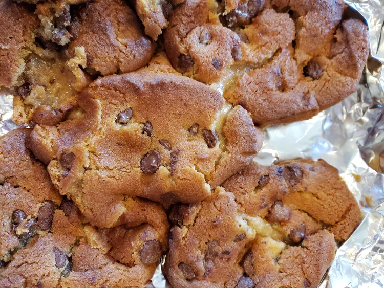

Air Fryer Pizookie

Description
The air fryer pizookie is a simple, delicious yet satisfying dessert topped with gelato, whipped cream, and a drizzle of melted chocolocate, or anything you like.
Ingredients
- 5 pieces pre-cut refrigerated chocolate chip cookie dough (such as Pillsbury™ Ready to Bake!™ Chocolate Chip Cookie Dough)
- 1 scoop vanilla gelato (optional)
- 2 tablespoons whipped cream, or as needed (optional)
- 1 ounce chocolate, melted, to drizzle (optional)
Steps
- Preheat the air fryer to 360 degrees F (175 degrees C).
- Get a large piece of aluminum foil and fold it into an 8x8-inch square. You can make a little dish out of the foil by folding the edges upward.
- Place 1 piece of cookie dough in the middle of your foil. Arrange remaining cookie dough pieces around it in a pattern similar to the 5-side of a die.
- Bake cookie in the air fryer for 6 minutes. Open the air fryer and gently push down the top of the cookie; continue to bake until deep golden brown, 2 to 4 minutes more.
- Add gelato, whipped cream, and a drizzle of melted chocolate, and enjoy!